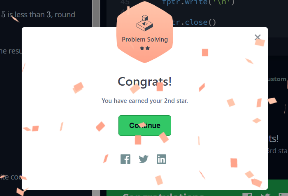

Interests
Click on any of the above tabs to learn more about my interests!
Sanda kickboxing
I started this hobby in May 2017, when I joined
Nanyang Polytechnic's Kickboxing
CCA. Knowing I could excel in anything I put my heart to, I invested loads of time and
effort into this activity which landed me in Nanyang Polytechnic's fight team. I went
on to represent the school in a competition in January 2018 where I was drafted for
the national team. I was then offered an opportunity to represent Singapore in the under 18s
division
but
did not
participate due to flak from my parents and the fact that I was going on a semester long overseas
exchange
program
soon.
Nevertheless, I
truly treasured my time in the national team and it imparted a few significant values that I
still follow to this day.
Playing the piano
I started learning how to play the piano in
2007,
after my first
music class in primary school. Since then, my love for music grew and I started seeing this as a
channel
to
unleash my creativity. Growing up, all of my schools have free access to musical instruments for
students
and
having a family
that is supportive both emotionally and financially was a huge bonus.
Being a part of Piano Ensemble(club) in polytechnic has also allowed me to participate in various
events,
concerts and
musical productions.
As an "ear-player", I can play almost any song just by listening to it once
or
twice.
Do let me know if you have any song requests!

How it started
My entry point into coding
was through the Grand-Theft-Auto(GTA) modding community where my gameplay experience can be enhanced
via my own scripts. However, I realised this required knowledge in C. This inspired me to start
learning python in order to build up my foundation and I have since moved on to other languages such
as C for a deeper understanding of how a computer works, and HTML CSS JS in order to easily build
programs/websites with nice GUIs. Sticking wit more languages and their purposes.
I'm actually planning to pick up C# next to make use of the unity game engine and after I'm more or
less familiar in it, I would like to transition to using unreal engine with C++.

How has programming improved your life?
I've actually
started using programs for automation since I was in secondary school. Being one that would rather
"work smart" instead of "work hard", I was always one to look for better, more efficient ways to do
things. This led to me experimenting with simple programs built for automation - mainly to use in
games. I actually benefitted significantly because it saved me a lot of time from "grinding" these
games - which meant I could spend more time resting or on schoolwork.
As someone that loves understanding how things work, I actually spent a lot of time looking
through the source codes and trying my best to figure out what everything meant and how words can
make a computer do stuff. Unfortunately, it was to no avail as I basically had zero
programming knowledge at that point. It was only till I got a little older and started playing GTA
before I really went and put in the effort to start learning. I really wished I started earlier
though, but as a kid, my attention span was pretty short but hey, better late than never right?
In addition, I seem to have taken a great interest in writing algorithms to solve mathematical
problems on websites such as leetcode, hackerrank and w3schools. This feels particularly refreshing
for me, someone who has spent more than 2 years in the army, as it feels as though I'm getting' to
sharpen my brain mentally again after a long break.

Business > Technology?
I understand that some may be
wondering
why
I decided to pursue a career in Technology instead of Business, considering that my Diploma was in
business
management. Here's why.
When I graduated from secondary school, I have already set my sights
on
"doing business"
in the future. I knew that I did not want to conform to the dress codes and 8-5 school schedule that
junior
colleges had
hence chose to enter a polytechnic. In hindsight, 16 year old me actually had no idea what "doing
business"
actually meant and
chose the course just because it sounded cool. Although I did have a lot of fun and did get to
interact
with
many people
with different views on different subjects, I only realised during my internship as a human
resources
assistant that I did not feel
mentally stimulated and that I could not handle doing simple repetitve tasks for the rest of my
career.
This
led
to a lot of self-reflection and through discussion with my friends, it finally dawned on me that I
have
been
fiddling with
software not because of homework or anything, but out of pure interest. I realised that I was
happiest
when
making games or automation software that can improve people's way of life and efficiency. On top of
that,
having new challenges to solve frequently and doing meaningful work that can directly impact others
positively on a daily basis sounds like the perfect job for me.